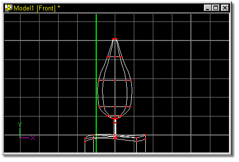
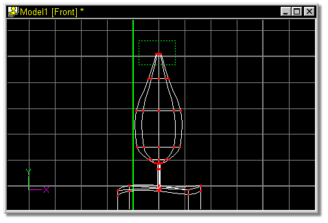

Figure 44
In this example, the top of the flame appears to be open. A simple scale
function will correct this.

 Click the Lathe button. The result shoud look similar to figure 44.
Click the Lathe button. The result shoud look similar to figure 44.
 Click the Group button and pull a bounding box around the top cross section
of the flame as shown in figure 45.
Click the Group button and pull a bounding box around the top cross section
of the flame as shown in figure 45.